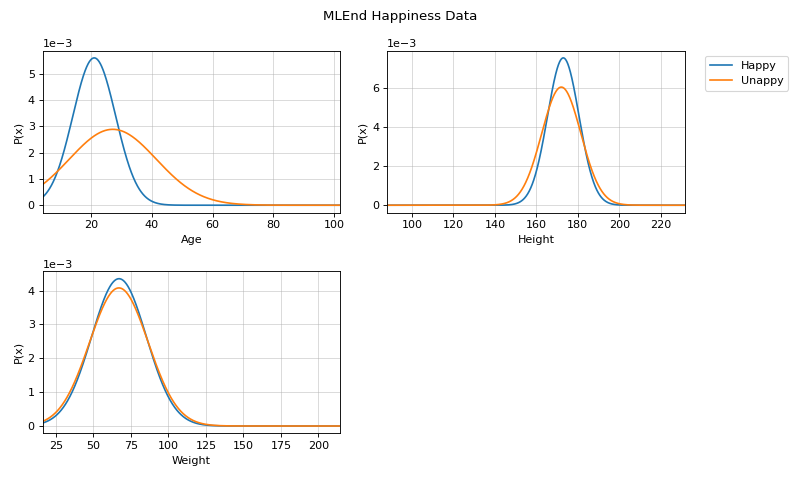

spkit.ml.NaiveBayes¶
- class spkit.ml.NaiveBayes¶
Gaussian Naive Bayes classifier.
The Gaussian Naive Bayes classifier. Based on the bayes rule
X: shape (n, nf), n samples with nf features
y: shape (n,) or (n,1) - doesn’t have to be integers
Computing the posterior probability of x being from class c using Bayes rule.
\[P(y_c | x) = \frac{P(x|y_c) P(y_c)}{P(x)}\]- Attributes:
- parameters: dict()
dictionry of the parameters
parameters[0] for parameters of class 0
parameters are
mu,sigmaandpriorfor each feature
- classes: 1d-array
array for
See also
Examples
#sp.ml.NaiveBayes import numpy as np import pandas as pd import matplotlib.pyplot as plt from spkit.ml import NaiveBayes mlend_happiness_dataset = 'https://raw.githubusercontent.com/MLEndDatasets/Happiness/main/MLEndHD_attributes.csv' # check - https://mlenddatasets.github.io/happiness/ data = pd.read_csv(mlend_happiness_dataset) X = data[['Age','Height','Weight']].to_numpy() y = data['HappinessLevel'].to_numpy() X = X[~np.isnan(y)] y = y[~np.isnan(y)] y = 1*(y>5) # NOTE: y can be list or array of string too print(X.shape, y.shape) #(308, 3) (308,) N = X.shape[0] np.random.seed(1) idx = np.arange(N) np.random.shuffle(idx) split = int(N*0.7) X_train, X_test = X[:split], X[split:] y_train, y_test = y[:split], y[split:] print(X_train.shape, y_train.shape, X_test.shape,y_test.shape) # (215, 3) (215,) (93, 3) (93,) model = NaiveBayes() model.fit(X_train,y_train) ytp = model.predict(X_train) ysp = model.predict(X_test) print('Training Accuracy : ',np.mean(ytp==y_train)) print('Testing Accuracy : ',np.mean(ysp==y_test)) #Training Accuracy : 0.8558139534883721 #Testing Accuracy : 0.8924731182795699 # Parameters :: $\mu$, $\sigma$ print('model parameters') print(model.parameters[0]) model.set_class_labels(['Happy', 'Unappy']) model.set_feature_names(['Age','Height','Weight']) fig = plt.figure(figsize=(10,6)) model.VizPx(show=False) plt.suptitle('MLEnd Happiness Data') plt.tight_layout() plt.show()
 Methods
VizPx([nfeatures, show])Visualize distribution of each feature for each class
fit(X, y)Fit Naive Bayes
predict(X)Computing/predicting class for given X
predict_prob(X)Computing the posterior probabiltiy of class for given X
set_class_labels(labels)Set labels of class
set_feature_names(fnames)Set labels for features
- VizPx(nfeatures=None, show=True)¶
Visualize distribution of each feature for each class
- Parameters:
- nfeatures: None, or list
if None, then all the features are plotted
to plot first 3 features only, use nfeatures = np.arange(3)
- fit(X, y)¶
Fit Naive Bayes
Compute mu, signma and priors for each features for each class
- Parameters:
- X: 2d-array
shape (n,nf)
Feature Matrix
Note
string labels - this allows the list strings or any numbers as labels
- y: 1d-array of int, or str
shape (n,1)
Labels
- predict(X)¶
Computing/predicting class for given X
- Parameters:
- X: 2d-array
shape (n,nf)
Feature Matrix
- Returns:
- yp: (n,)
array of predicted labels
See also
- predict_prob(X)¶
Computing the posterior probabiltiy of class for given X
- Parameters:
- X: 2d-array
shape (n,nf)
Feature Matrix
- Returns:
- ypr: (n, nc)
array of posterior probabiltities for each class
nc - number of classes
- set_class_labels(labels)¶
Set labels of class
Used while visualizations
- Parameters:
- labels: list of str
should be same size as number of classes
- set_feature_names(fnames)¶
Set labels for features
Used while visualizations
- Parameters:
- fnames: list of str
should be same size as number of features